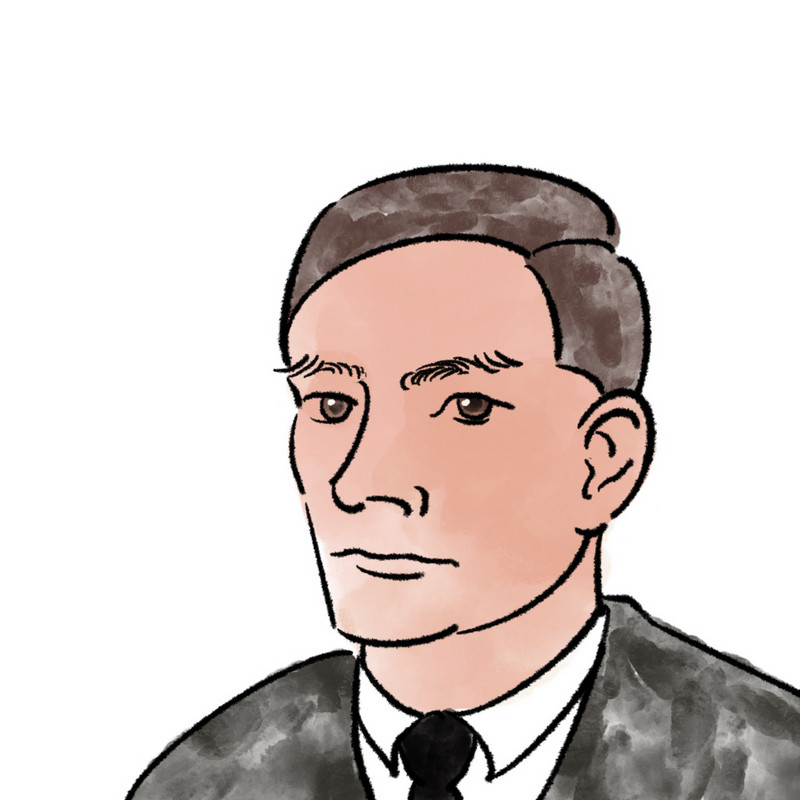

ALAN TURING
1912-1954

1936 Artículo "On computable Numbers"
Alan Turing publica su artículo
"On Computable Numbers, with an
Application to the Entscheidungs problem",
que establece las bases teóricas de la
computación.
1936 Máquina Enigma
Durante la Segunda Guerra Mundial,
Turing trabaja en Bletchley Park, donde
contribuye significativamente al
descifrado de los códigos enigma
utilizados por las fuerzas alemanas.
1945 Diseño ACE
Turing diseña la ACE (Automatic
Computing Engine), uno de los primeros
diseños de computadoras electrónicas de
propósito general.
1950 Artículo
Alan Turing publica un artículo titulado
"Computing Machinery and Intelligence",
en el que propone el famoso "Test de
Turing" para evaluar la inteligencia
artificial.